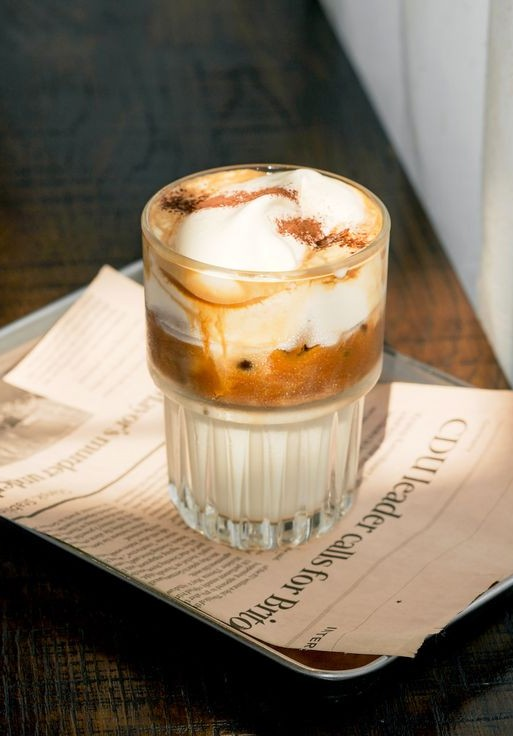
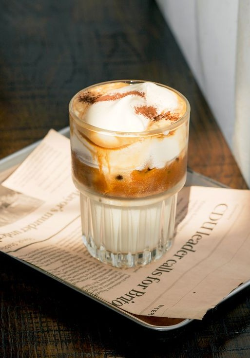
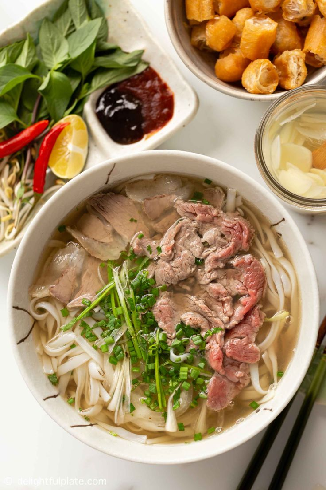
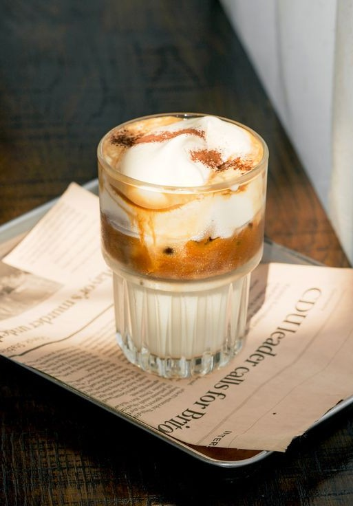
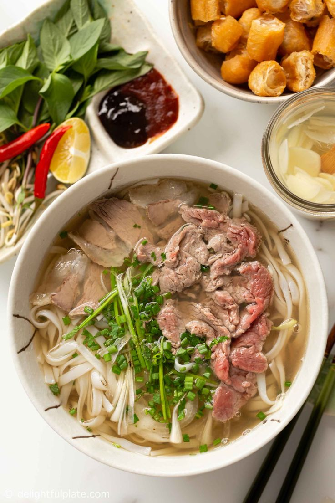
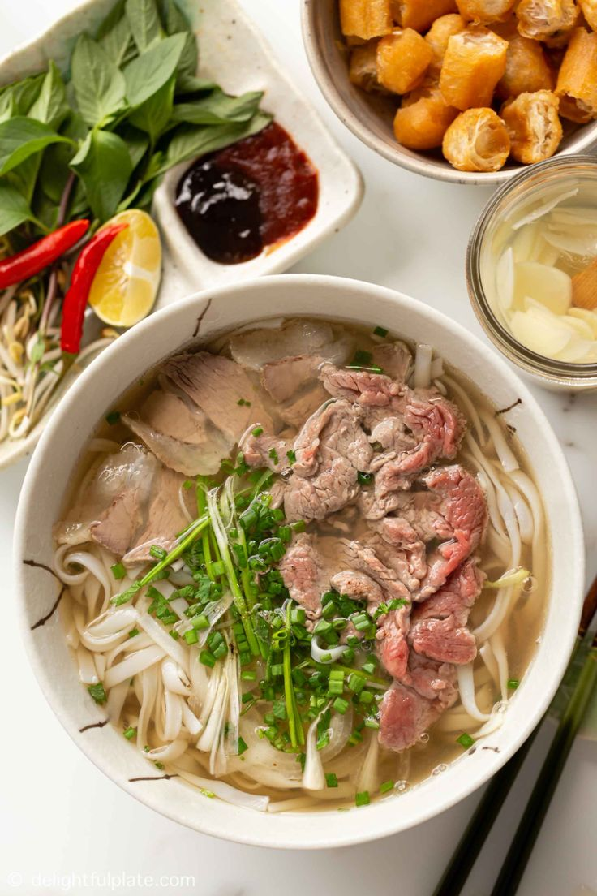
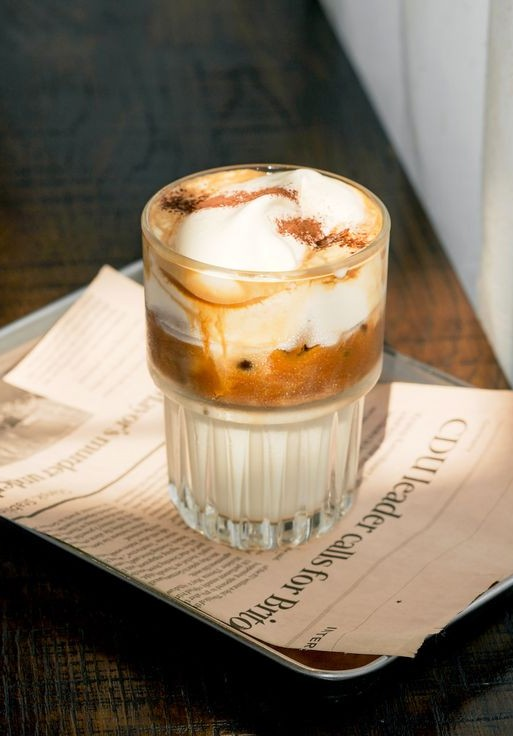
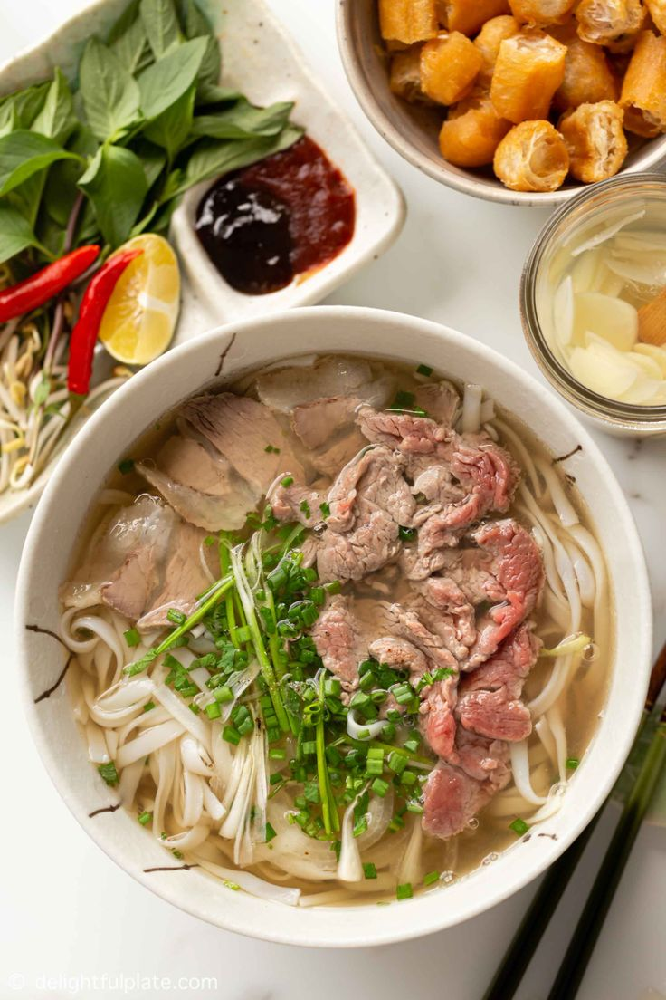

 





Bánh mì là một món ăn phổ biến trong ẩm thực Việt Nam, được làm từ bột mì, nước, men và muối. Bánh mì có lớp vỏ giòn, ruột bên trong mềm mịn, thường được ăn kèm với nhiều loại nhân như thịt, chả, rau sống, và các loại gia vị đặc trưng. Món ăn này không chỉ xuất hiện trong các bữa sáng mà còn là món ăn tiện lợi, phù hợp cho mọi lúc trong ngày. Bánh mì cũng là sự kết hợp tinh tế của các yếu tố ẩm thực phương Tây và phương Đông, thể hiện sự sáng tạo và phong phú của ẩm thực Việt Nam.
Phở là một món ăn truyền thống nổi tiếng của Việt Nam, đặc biệt là ở Hà Nội và TP. Hồ Chí Minh. Phở bao gồm nước dùng trong, được ninh từ xương bò hoặc gà, kết hợp với các gia vị như gừng, hành, quế và thảo mộc để tạo ra hương vị đặc trưng. Món phở được ăn kèm với bánh phở – sợi mì mềm và dai, cùng với các loại thịt bò hoặc gà thái mỏng. Phở thường được ăn kèm với rau sống, chanh, và tương ớt, mang lại sự cân bằng giữa các hương vị ngọt, mặn, cay và chua. Phở không chỉ là món ăn, mà còn là một phần trong văn hóa ẩm thực Việt Nam, phản ánh sự tinh tế và phong phú của các món ăn đường phố.

Cà phê trứng là một món thức uống đặc biệt của Hà Nội, được tạo ra từ sự kết hợp giữa cà phê, trứng gà tươi, sữa đặc và đường. Lòng đỏ trứng được đánh bông với đường và sữa đặc tạo thành một lớp kem mịn, ngọt ngào, khi được phủ lên trên ly cà phê đen đậm đà, tạo nên một món cà phê vô cùng hấp dẫn. Món cà phê này không chỉ có vị béo ngậy, ngọt dịu mà còn mang lại sự kết hợp hoàn hảo giữa hương vị cà phê và trứng, làm cho người thưởng thức cảm nhận được sự tinh tế trong từng ngụm. Cà phê trứng đã trở thành một trong những đặc sản nổi tiếng của Hà Nội, được nhiều người yêu thích và tìm đến để thưởng thức.
Việt Nam nổi tiếng với nền văn hóa uống rượu đa dạng và độc đáo, và một trong những trải nghiệm uống rượu phổ biến nhất ở Hà Nội là Bia Hơi. Bia Hơi là một loại bia nhẹ, sảng khoái được ủ hàng ngày và phục vụ tươi từ thùng. Văn hóa uống rượu độc đáo này đã trở thành một phần không thể thiếu trong đời sống xã hội của Hà Nội, và du khách đến thành phố này không nên bỏ lỡ cơ hội tự mình thử nó.